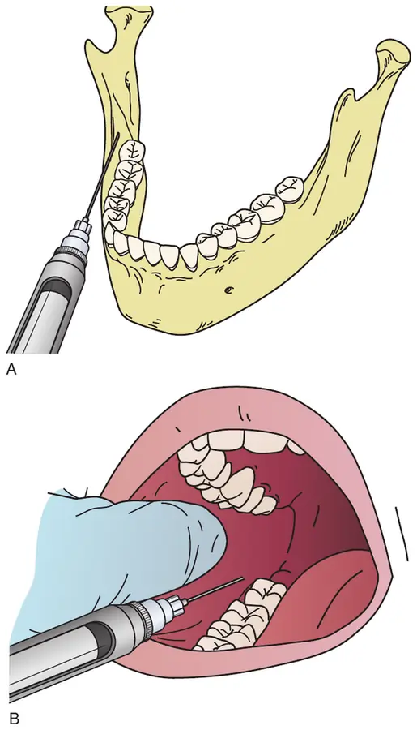

نسخه استخراجشده؛ ترجمه یا تأیید علمی انجام نشده است. وضعیت: captured
ناحیهی هدف: سطح خارجی گردن کندیل. محل ورود: مخاط سطح مزیال راموس، روی خطی از شیار بینتراگوسی تا گوشهی دهان سمت مقابل، درست دیستال مولر دوم ماگزیلا.

لندمارکها: بیروندهانی — شیار بینتراگوسی (لبهی پایینی تراگوس؛ لندمارک واقعی مرکز مجرای شنوایی خارجی است که تراگوس آن را پوشانده) و گوشهی دهان سمت مقابل. دروندهانی — ارتفاع تزریق با گذاشتن نوک سوزن درست زیر کاسپ مزیولینگوال (مزیوپالاتال) مولر دوم ماگزیلا تعیین میشود. سوزن تا تماس با گردن کندیل پیش میرود (عمق میانگین حدود ۲۵ میلیمتر) و جهت بِوِل در این تکنیک حساس نیست.
مزیت اصلی و دلیل وجودی این تکنیک: عصبدهی کمکی هم بلاک میشود، پس تزریقهای اضافی معمولاً لازم نیست. نرخ موفقیت بیش از ۹۵ درصد با تجربه، نرخ آسپیراسیون مثبت حدود ۲ درصد، عوارض پس از تزریق کم، و در حضور عصب آلوئولار تحتانی دوشاخه و کانالهای مندیبولار دوشاخه هم موفق است.
و معایبی که باید بدانی: شروع اثر کندتر از بلاک معمولی است — به علت قطر تنهی عصبی و فاصلهی حدود ۵ تا ۱۰ میلیمتری محل تزریق تا عصب. و یک منحنی یادگیری واقعی دارد که برای برخی افراد ناامیدکننده است.
منع مصرف: عفونت یا التهاب حاد در ناحیهی تزریق (نادر)، بیمارانی که ممکن است لب یا زبانشان را گاز بگیرند، و بیمارانی که نمیتوانند دهانشان را کاملاً باز کنند، مثلاً به علت تریسموس.
این تکنیک دقیقاً برای همان بیماری ساخته شده که گاو-گیتس در او ممنوع است: بیماری که دهانش باز نمیشود. نامش هم همین را میگوید — بلاک مندیبولار با دهان بسته.
محل ورود: بافت نرم روی لبهی داخلی (لینگوال) راموس، درست مجاور توبروزیتهی ماگزیلا، در ارتفاع محل اتصال مخاط به لثه. ناحیهی هدف: بافت نرم لبهی داخلی راموس، در ناحیهی اعصاب آلوئولار تحتانی، لینگوال و مایلوهایوئید.
و یک نکتهی مقایسهای که همهچیز را مرتب میکند: ارتفاع تزریق ویزیرانی-آکینوزی، پایینتر از گاو-گیتس ولی بالاتر از بلاک آلوئولار تحتانی معمولی است. پس این سه تکنیک، سه ارتفاع متفاوت روی یک مسیر عصبیاند.
جهت بِوِل اینجا برخلاف بلاک معمولی بسیار مهم است: بِوِل باید رو به دور از استخوان راموس باشد — یعنی رو به خط وسط.
مزایا: نسبتاً اتروماتیک، بیمار لازم نیست بتواند دهانش را باز کند، عوارض پس از عمل کمتر مثل تریسموس، نرخ آسپیراسیون کمتر از ۱۰ درصد که از بلاک معمولی پایینتر است، و مثل گاو-گیتس، در عصب دوشاخه هم موفق است.
عیب اصلی: دیدن مسیر سوزن و عمق ورود دشوار است — چون هیچ استخوانی لمس نمیشود که به تو بگوید کجایی.